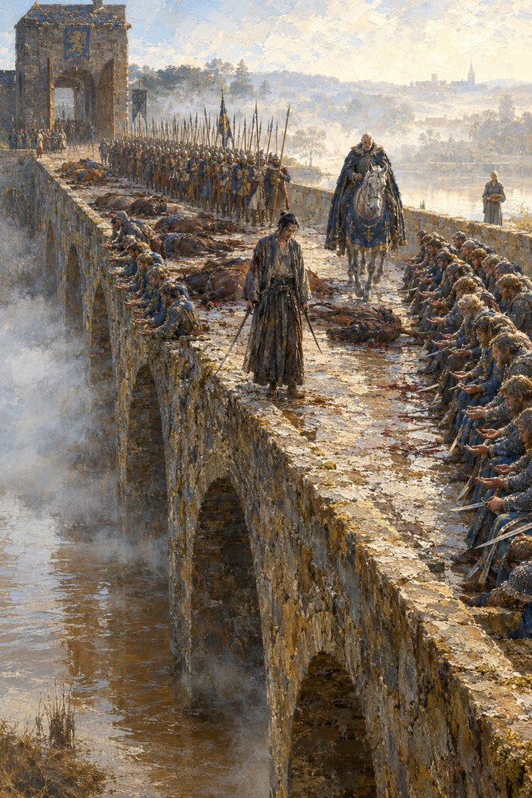

Record 14 of 15
The Nine Arches
At the crown of the bridge Higaide stands with a sword lowered in each hand and a stain on his sleeve that is not his own, while thirty-four unhorsed knights of Tarnwald sit along the parapet with their hands held out before them and the Grey Lances stand in a double line behind him; the Duke, Waldo, rides slowly toward him with a long blue curtain across his saddle-bow, and far down at the south head Adalgund waits with an oiled bundle in the crook of her arm.
On a mist-wreathed stone bridge of many arches at morning, a lean man in a dark robe with a sword lowered in each hand and a stain on his sleeve stands on the roadway between rows of unhorsed knights in mail seated along both parapets with their hands held out, dead horses across the road, a double line of spearmen behind him under a gate-tower and a stooped rider in a blue cloak on a tall grey horse coming toward him.